Записано 23 сентября 2010
Kenny Wayne Shepherd's Live! In Chicago
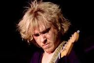
Мы записываем пластинки и даем концерты уже многие годы, но мы ни разу не выпускали концертный альбом. Наши фанаты просили об этом уже давно. Я хотел дать им нечто особенное, неповторимое. И я думаю, что с "Live! In Chicago" у нас это получилось. Мысль записать концертный альбом пришла во время работы над "10 Days Out: Blues From The Backroads", когда мы взяли на гастроли некоторых моих друзей и некоторых из тех, кого я считаю для себя героям. У нас был Хьюберт Самлин (Hubert Sumlin) из группы Хаулин Вулфа, Бадди Флэтт (Buddy Flett) и Брайан Ли (Bryan Lee) из моего родного штата Луизиана, Крис Лэйтон (Chris Layton) и Томми Шэннон (Tommy Shannon) из группы "Double Trouble" - мы отправились в дорогу и провели этот тур.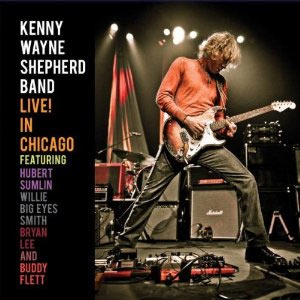
Именно этот вечер был записан на концерте в Чикаго, в зале House of Blues, и это было великолепно! Это был электрический вечер, и я думаю, что он прошел действительно здорово! Я думаю, в нем принимали участие все, кого я хотел. Мы пытались собрать некоторых из тех, кто принимал участие в проекте "10 Days Out", но нам пришлось слегка сократить список дл этого диска. Люди, которые были там в тот вечер, я думаю, они получили удовольствие от действительно отличного концерта, а теперь, когда мы выпускаем в свет его запись, все могут получить от него удовольствие. И осталось еще много невошедшего материала, думаю, мы сможем выпустить что-то из этого в будущем.10 Days Out: Blues From The Backroads
У нас давно была мысль отправиться на гастроли и попытаться записаться с некоторыми из тех, кого я для себя считаю героями, с некоторыми из музыкантов старой блюзовой школы. Изначально мы просто собирались поиграть с ними в расслабленной атмосфере, сочинить с ними что-нибудь новенькое. Но первоначальная идея выросла в нечто большее, когда мы собрались в дорогу, и мы побывали прямо дома у этих парней… Мы играли с ними их песни. Мы записали это, и сделали документальное видео про все наше путешествие, про встречи с этими необыкновенно талантливыми блюзовыми музыкантами.
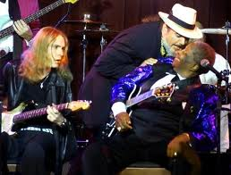
Все было очень клево. Там были многие мои герои, вроде БиБиКинга, Кларенса Гейтмауса Брауна, музыкантов из групп Мадди Уотерса и Хаулин Вулфа. И еще было несколько подлинных блюзовых талантов о которых могли никогда и не слышать, даже если вы большой поклонник блюза. Но они играют блюз всю свою жизнь. Live! In Chicago. Моей целью в этом проекте было дать блюзовому сообществу и моим фанатам по-астоящему необычайный проект, в который захотелось бы впиться зубами, чтобы обратить их внимание к некоторым из тех людей, кто вдохновляет меня играть уже многие годы, познакомить их с некоторыми блюзовыми музыкантами, о которых они могли и слышать прежде (прим.: среди относительно малоизвестных музыкантов, "засветившися" в фильме и на CD Генри Тауншенд (Henry Townsend), Этта Бейкер (Etta Baker), Кути Старк (Cootie Stark) и Ханейбой Эдвардз (Honeyboy Edwards). Сыграть с Эттой Бейкер на ее кухне было, вероятно, одним из самых трогательных моментов из всего, что случилось. А еще играть с БиБиКингом в его родном городе Индианапола в Миссиссиппи, сыграть с Кларенсом Брауном. Моментом, которым я особенно горжусь, было исполнение песен Мадди Уотерса с участниками его блюзбэнда. Я вырос, слушая этот альбом, выпущенный Мадди Уотерсом, который назывался "Снова встал" (Hard Again)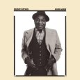
; когда я был малышом, это был мой любимый альбом. На егозаписи играли Джонни Уинтер, Пайнтоп Перкинс, Джеймс Коттон, Боб Марголин и Уилли "Пучеглазый" Смит – и все эти ребята были на той пластинке.Я купил, наверное, сотню экземпляров этого CD, только для своего личного пользования. Я их просто "снашиваю". Я думаю, что это одна из величайших блюзовых записей всех времен.
Я часто играл под эту пластинку, когда был маленьким, делал вид, что я участник группы. И наконец мне представился случай в действительности поиграть с этими ребятами при работе нал "10 Days Out". Со мной были Пайнтоп, Уилли "Биг Айз" Смит, Боб Марголин, Кэлвин "Фуз" Джонс (Calvin "Fuzz" Jones)играл на басу – так что был почти весь бэнд полностью. Не смог приехать только Джеймс Коттон. Ну и понятно, Джонни Уинтера с нами не было. Но были почти все ребята, кто еще есть.
О юных днях
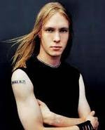
Я вырос в музыкальном доме. Мой отце был связан с радио, так что я вырос, слушая самую разную музыку, и ходил на самые разные концерты… На первом концерте я побывал, когда мне было три года, и это был концерт Мадди Уотерса и Джона Ли Хукера. Я думаю, что в том момент меня зацепило, и блюз меня больше не отпускал. Я ходил на все концерты всех гастролеров, кто приезжал в наш город, у меня была возможность знакомится со всеми музыкантами на протяжении всех тех лет. И это сильно повлияло на то, какую музыку я выбрал. Мой отец был большим поклонником блюза, и у него была громадная коллекция пластинок, там были все имена, какие вы только можете представить. Я постоянно перебирал его коллекцию, и научился играть эти записи нота в ноту.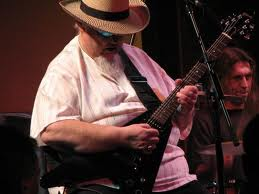
Первый раз я вышел на сцену, когда мне было 13 лет, это было на Бурбон-стрит в Новом Орлеане. Блюзмен Брайан Ли позволил мне подняться на сцену в первый раз, дал мне встать рядом с собой. Я очень волновался, когда шел, я никогда раньше не был на сцене, но я решил, что после этого мне уже не будет страшно. Я поднялся на сцену и получил свои первые овации, публика встала, аплодируя. Мне не давали сойти со сцены, хотели, чтобы я продолжал играть. И я подумал: "А это, вроде, весело. Я мог бы заниматься этим".Ledbetter Heights
И немного времени спустя я пошел в студию записывать мое первое демо, мне было 14. Я собрал свою первую группу, когдамне стукнуло 15, и, когда мне было 16, я уже имел контракт на запись альбома. Этому нет лучшего объяснения, чем то, что так и должно было быть.Многие переезжают в Нэшвилл, или Лос-Анджелес, или Нью-Йорк, чтобы начать музыкальную карьеру, но я подписал контракт с крупной фирмой, когда жил в Шривпорте, штат Луизиана.
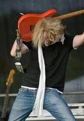
Люди смотрели на меня как на вундеркинда. Думаю, было необычно, что кто-то в моем тогдашнем возрасте играл блюз. Поднялась большая волна слухов, которая стала распространяться по стране, она дошла и до Нью-Йорка, и до Западного побережья. И прежде, чем я мог понять, в чем дело, все эти звукозаписывающие компании засыпали меня звонками. Телефон трезвонил так, что срывался с рычага. Все стремились подписать со мной контракт. (Записывая дебютный альбом "Ledbetter Height",Шепард еще учился в старших классах). Я просто делал то, что я любил. А любил я играть музыку. Я еще не понимал по-настоящему, куда это приведет меня. И я определенно не знал, что это все вырастет в нечто столь большое, как сейчас. Я просто делал то, что приходило ко мне естественно, и вкладывал в это все силы. Слава Господу, что людям понравилось то, что они услышали. Мой первый сингл "Deja Voodoo", едва вышел, сразу пошел вверх в чартах (в рок-чартах поднялся до #5). "Ledbetter Heights" стал платиновым. Мой следующий альбом "Trouble Is..." прошел еще лучше. Мы пользовались большим успехом на радио, нас часто ставили в эфир. Блюзовое поколение (Шепард был частью блюзового поколения, которое выдало на гора стразу трех молодых талантливых гитариста: джо Бонамассу, Джонни Лэнга и Шепарда) Думаю, происходило нечто более важное. Это было время,когда в музыку вдохнули новую жизнь. И отчасти это просто совпадение, что мы все появились в одно время, и все получили вполне приличный успех, и мы все продолжаем заниматься этим.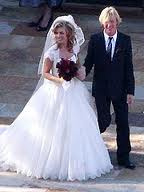
Всегда в блюз будут вдыхать новую жизнь. Приходят новые поколения, и они вносят в музыку свое новое влияние. И я думаю, это на пользу музыке, и это на пользу всем нам. То, что мы делаем, это не традиционный блюз, мы часто смешиваем вместе рок и блюз. Те фанаты, которых мы приобрели, я уверен, это фанаты жизни. Это кредо той музыки, которой мы занимаемся, и позиция самих фанатов. Если у вас есть такие фанаты, можете быть уверенны в успешной карьере длинною в жизнь. Посмотрите на кого-то вроде БиБиКинга, ему уже за 80 и он продолжает выступать каждый вечер. Теперь считается, что тебе повезло, если твоя музыкальная карьера продолжается больше пяти лет. А я занимаюсь этим профессионально с 1993 года. И я за это благодарен моим фанатам.На последнем фото: свадьба KWS с Ханной (дочкой Мэла Гибсона)
На своем сайте KWS опубликовал краткое видео-представление каждой из 16 песен альбома и представил своих гостей на этом концерте.
Перевод с порядковым номером песен, как они идут в альбоме:
14. Honey Bee это старая блюзовая песня, которую знаменитой сделал Muddy Waters... Он сделал очень клеевую ее версию. Но мы ее слегка изменили, превратили в эдакую рок-версию. Обычно мы исполняем ее в конце программы, как часть бисовки. И она просто поднимает публику на ноги.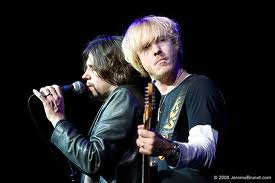
1. Somehow, Somewhere, Someway 4:53 (Как-нибудь, Где-нибудь, Как-то) – это песня из моего второго альбома. Обысно мы начинаем с нее концерт. Она в среднем темпе и подходит для первого представления нас публике. Она вроде подвижной любовной песни, если хотите.2. King's Highway 7:02 – некоторым образом связано с реальной историей из моей жизни. В моем родном городе действительно есть улица, которая называется "Королевское шоссе". И одно из моих любимых мест, где можно перекусить, Georgia's Grill – находится на Королевском шоссе. И у меня тогда была подружка, с которой мы вместе пошли в Georgia's Grill перехватить ланч, или что-то в этом роде. И у нас началась ссора. И все кончилось тем, что мы расстались.
3. True Lies 5:54 – это просто великолепная кайфовая песня. Я имею ввиду, что в любой вечер эта песня заставляет публику танцевать., подпевать, хлопать в ладоши. Она помогает всех подзарядить энергией. Мне кажется, она всем нравится
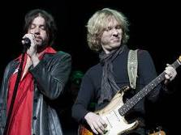
4. Deja Voodoo 7:03 – Мне было 17 лет, я выпустил свой первый альбом, Deja Voodoo была первым синглом, она выстрелила до пятого номера в рок-чартах. В общем, она познакомила мир с Кенни Уэйном Шепардом.5. Sell My Monkey 4:18 – Это старая песня БиБиКинга (прим. Вообще-то это песня Тампа Реда (в миру Хьюдсона Уиттекера. Шепард, видимо, знает ее по альбому БиБиКинга Blues N Jazz 1983 г.). И это та песня, которую Buddy Flett исполняет с тех пор, ну, по крайней мере, с тех пор как я впервые побывал на его концерте, когда был еще маленьким. Это настоящий подвижный свингующий шафл, а Бадди один из лучших, кто играет в этом ритме. Вот почему я решил, что это отличная песня для того, чтобы мы сыграли вместе. И мне очень нравится гитарная работа Бадди в этой песне.
6. Dance For Me Girl 5:09 - Это одна из песне, которые Бадди Флэтт сочинил сам. На самом деле, я думал записать эту песню в одной из своих альбомов уже несколько лет, мы с ним говорили об этом. Но этого так и не случилось, и тут, я считаю, был идеальный повод исполнить ее вместе с ним, и я очень счастлив, что она попала в этот альбом. Это очень клеевая, очень сексуальная песня.
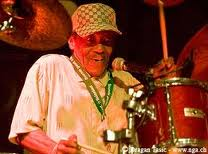
7. Baby, Don't Say That No More 6:00 – Это Уилли Смит, кто играет с нами в этой песне. Это старая песня Джимми Рида. А Джимми Рид оказал влияние на нас всех, этот его особый шафл, которым он знаменит. А поскольку Уилли изначально был барабанщиком, я думаю, именно поэтому ему так нравится Джимми Рид.8. Eye To Eye 6:18 – Ее выбрал Уилли. Мне кажется, он ее записывал в одном из своих предыдущих альбомов. Вы знаете, что Уилли играл в блюзбэнде Мадди Уотерса, а это была одна из лучших групп, кто умел "оттягивать" ритм далеко назад, играя медленный блюз. И это именно такая песня.
9. How Many More Years 4:32 - Это песня Хаулин Вулфа, но мы делаем ее так, как хотел Брайан Ли, очень подвижно. Это был момент в концерте, когда стоило подхлестнуть ритм после того, как Уилли ушел со сцены. И Брайан Ли оттянулся в этой песне.
10. Sick And Tired 5:16 –Брайан выбрал исполнить эту песню. Это отличный грув, с пульсирующим ритмом в стиле Нового Орлеана с акцентом на вторую и четвертую доли. И Крис (из Double Trouble) играет здесь. Это придает абсолютно новый аромат всему альбому.
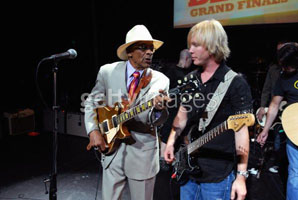
11. Feed Me 4:47 – Это песня, которую написал и исполняет Хьюберт Самлин в этом альбоме. И мы все знаем, кто такой Хьюберт. Хьюберт играл с легендарным Хаулин Вулфом много-много лет. Он один из самых значительных гитаристов всех времен, оказал огромное влияние. И мы хотели сделать песню, которую он сам сочинил, и чтобы он и спел ее и сыграл на гитаре.12. Rocking Daddy 3:54 – Это песня Хаулин Вулфа, в ней сразу узнается гитарный почерк Хьюберта Самлина. Есть несколько разных песен Хаулин Вулфа, где Хьюберт играет одинаковый риф. Когда мы составляли программу песен для этого концерта, я знал, что мы должны сыграть эту песню. Это один из моих самых любимых рифов Самлина всех времен.
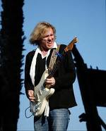
13. Blue On Black 5:32 – Это песня, которую я написал с двумя моими друзьями. В моей карьере этот сингл был самым большим хитом. В рок-чартах "Биллбоарда" он был на первой позиции на протяжении 17 недель, думаю, тогда это был рекорд. И по сей день я необычайно горжусь этой песней. И, мне кажется, эта концертная версия ее достойна.Видео концертного выступления группы KWS с Хьюбертом Самлиным:
Blues.Ru -
Новости |
Музыканты |
Стили |
CD Обзор |
Концерты |
Live Band |
Лента |
Форум